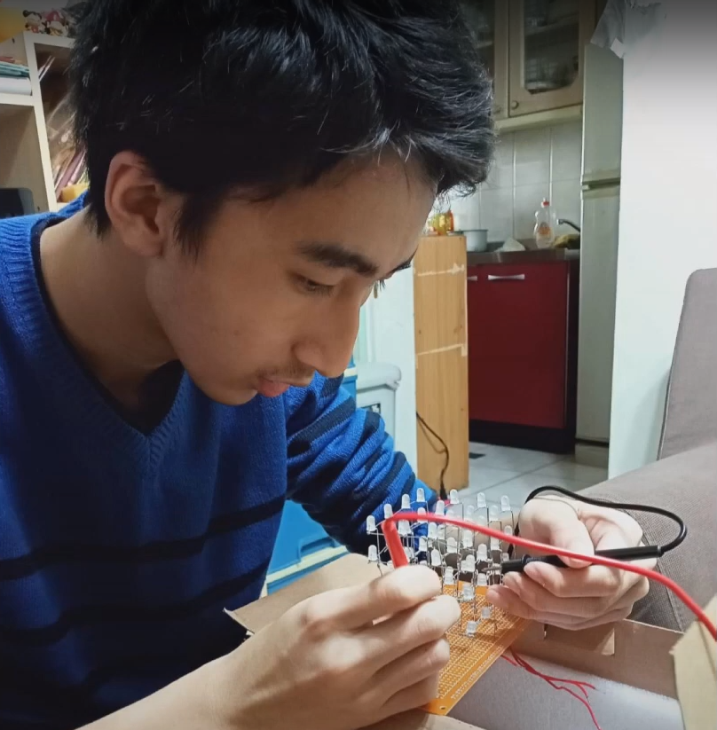
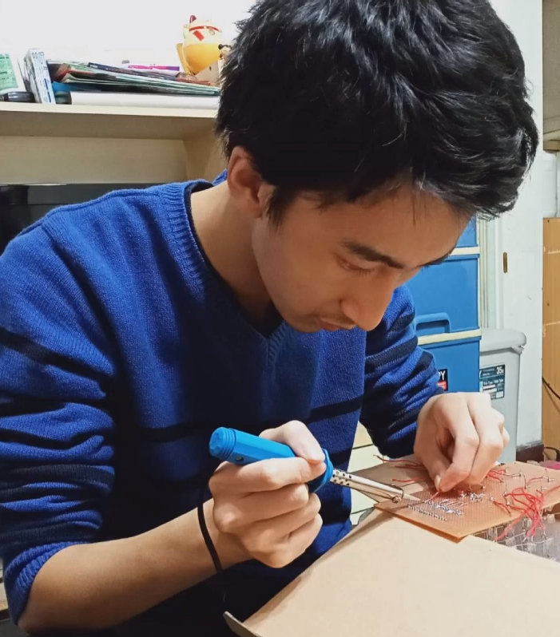

蔡宇倫的自主學習
首頁
學習週誌
第一周
第二周
第三周
第四周
第五周
第六周
第七周
第八周
第九周
第十周
關於我
大家好!我是
YU-LUN TSAI 蔡宇倫
我
來
自
南
崁
高
中


堅毅不拔，勇於挑戰困難，戰勝問題，達成自己的理想；平時也喜歡寫程式，像是html、css或是學習Arduino，精進自我的能力。
興趣:
寫程式(html、css、Arduino)，玩Arduino的配件、改裝電腦等。
經歷:
我在高中這階段有自己動手改裝過電腦，也有接觸過許多程式語言，像是html、css、c++(Arduino)、bootstrap，其中以html和css最為熟悉和喜愛。
目標:
以資訊工程相關科系為目標，以提升自我的編程技能。
SKILLS
HTML
90%
CSS
60%
BOOTSTRAP
40%